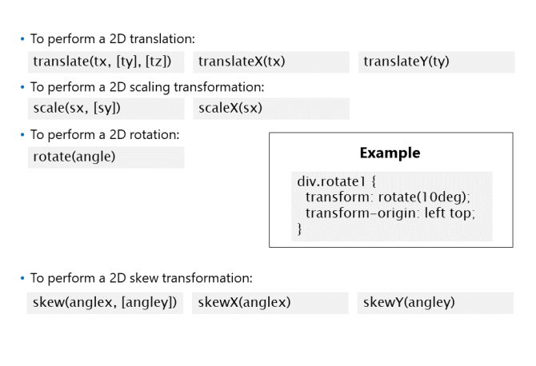
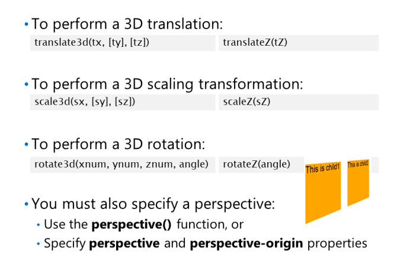
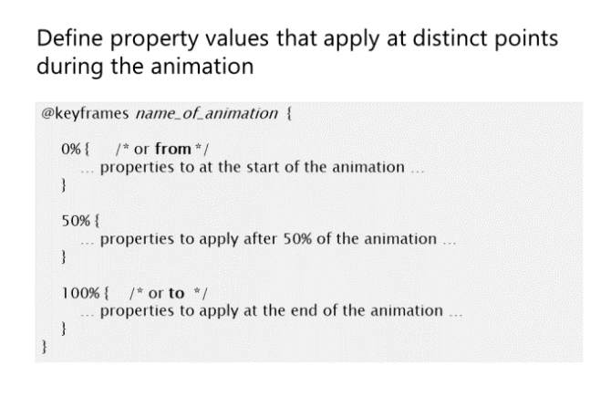

• translate(), translate3d(), translateX(),
translateY(), and translateZ(): Translate the
element in 2D or 3D space.
• scale(), scale3d(), scaleX(), scaleY(), and
scaleZ(): Scale the element in 2D or 3D space.
• rotate(), rotate3d(), rotateX(), rotateY(), and rotateZ(): Rotate the element in 2D or 3D space.
• skew(), skewX(), and skewY(): Skew the element along the X-axis or along the Y-axis.
• matrix(), matrix3d(): Perform a 2D or 3D transformation by using a matrix to specify the
transformation.
• perspective(): Define a perspective for an element that has been transformed in 3D.
• none(): Cancel any transformations that apply on an element.
Poniższy kod pokazuje stronę internetową, która wyświetla pojedynczy przycisk. Właściwość przekształcenia w stylu
reguła dla przycisku przesuwa przycisk w prawo i w dół strony i stosuje pochylenie o 45 stopni.
Stosowanie transformacji 2D

Domyślnym źródłem transformacji jest
środek elementu docelowego. Żeby zmienić
początek transformacji, ustaw transform-origin
i określ następujące wartości:
• Horizontal position: A length, a percentage of
element width, or left, center, or right.
• Vertical position: A length, a percentage of
element height, or top, center, or bottom.
• tx określa poziome przesunięcie w lewo (jeśli ujemne) lub w prawo (jeśli dodatnie). Wartość może być
długość bezwzględna lub procent szerokości elementu.
• ty określa translację pionową w górę (jeśli ujemna) lub w dół (jeśli dodatnia). Wartość może być
długość bezwzględna lub procent wysokości elementu. Jeśli wywołasz translate () i pominiesz ty
parametr, wartość domyślna dla ty wynosi 0.
Element jest przenoszony 60
pikseli w prawo:
div.translate1 {
transform: translate(60px);
}
Skalowanie elementów
• scale(sx, sy)
• scaleX(sx)
• scaleY(sy)
• sx określa poziomy współczynnik skalowania. Wartość 1,0 oznacza normalną skalę.
• sy określa współczynnik skalowania w pionie. Wartość 1,0 oznacza normalną skalę. Jeśli wywołasz skalę () i
pomiń parametr sy, domyślna wartość dla sy jest taka sama jak wartość określona dla sx.
Element jest o 30 procent większy:
div.scale1 {
transform: scale(1.3);
}
Obracanie elementów
• rotate(angle)
Element jest obracany o 10 stopni
zgodnie z ruchem wskazówek zegara wokół lewego górnego rogu:
div.rotate1 {
transform: rotate(10deg);
transform-origin: left top;
}
• anglex określa kąt pochylenia wokół osi X jako pochylenie zgodnie z ruchem wskazówek zegara (jeśli jest ujemne) lub przeciwnie do ruchu wskazówek zegara
przekrzywienie (jeśli pozytywne).
• kąt określa kąt pochylenia wokół osi Y jako pochylenie zgodnie z ruchem wskazówek zegara (jeśli jest ujemne) lub przeciwnie do ruchu wskazówek zegara
przekrzywienie (jeśli pozytywne). Jeśli wywołasz skew () i pominiesz parametr angley, domyślną wartością dla angley jest 0
Element jest pochylony o 30 stopni
przeciwnie do ruchu wskazówek zegara wokół osi X:
div.skew1 {
transform: skew(30deg);
}
Stosowanie transformacji 3D

Translating Elements
• translate3d(tx, ty, tz)
• translateZ(tz)
Parametr tz określa translację w osi Z, która jest prostopadła do płaszczyzny ekranu.
Musisz podać wartość bezwzględną, a nie procentową. W funkcji translate3d() ty i tz
parametry są opcjonalne; oba domyślnie mają wartość 0.
Scaling Elements
• scale3d(sx, sy, sz)
• scaleZ(sz)
Parametr sz określa współczynnik skalowania w osi Z. W funkcji scale3d () sy i sz
parametry są opcjonalne; oba domyślnie mają wartość 0.
Rotating Elements
• rotate3d(xnum, ynum, znum, angle)
Parametr angle określa kąt obrotu przeciwnie do ruchu wskazówek zegara (jeśli ujemny) lub zgodnie z ruchem wskazówek zegara (jeśli dodatni)
o wektorze kierunku określonym przez pierwsze trzy parametry. Na przykład:
• rotate3d(1, 0, 0, 60deg) performs a rotation about the X axis
• rotate3d(0, 1, 0, 60deg) performs a rotation about the Y axis
• rotate3d(0, 0, 1, 60deg) performs a rotation about the Z axis
Setting the Perspective and the Perspective Origin
Perspektywa określa
pozycja widza w stosunku do transformowanego obiektu i określa, w jaki sposób treść zmniejsza się w miarę Z
Istnieją dwa sposoby określenia perspektywy:
• Wywołaj funkcję perspective() za każdym razem, gdy korzystasz z właściwości transform.
• Ustaw właściwość CSS perspektywy na elemencie nadrzędnym, aby zastosować perspektywę do każdego z elementów podrzędnych.
Możesz także ustawić właściwość CSS perspective-origin, aby przesunąć punkt widzenia od środka elementu.
Poniższy przykład pokazuje, jak zdefiniować perspektywę transformacji 3D. Przykład definiuje
div
elementy o nazwie child1 i child2 w elemencie macierzystym o nazwie parent. Zwróć uwagę na następujący CSS
zasady:
• The #parent CSS rule defines a perspective of 300px, which means the disappearing point will be
300 pixels to the right of the perspective origin. The perspective-origin property moves the
perspective origin 100 pixels to the left and 50 pixels upwards.
• The #child1 CSS rule rotates a div element by 30 degrees clockwise about the Y axis.
• The #child2 CSS rule rotates a div element by 30 degrees clockwise about the Y axis, and then
translates the shape by 250 pixels in the X direction.
This is child1
This is child2
Defining Transitions for Transformations

Możesz zdefiniować przejście dla transformacji, więc
transformacja jest stosowana stopniowo w ciągu
określony czas. Aby zdefiniować przejście dla
transformacja, wykonaj następujące kroki:
• Zdefiniuj transformację 2D lub 3D dla
element za pomocą transformacji CSS.
• Ustaw właściwość przejścia, aby zdefiniowała
przejście dla właściwości transformacji CSS.
Poniższy przykład definiuje obrót dla a
div
element o nazwie kontener. Kiedy użytkownik
zatrzyma się nad elementem, element obróci się o 90 stopni zgodnie z ruchem wskazówek zegara. Przykład definiuje również
przejście do transformacji, dzięki czemu obrót zajmie pięć sekund: